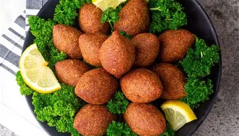
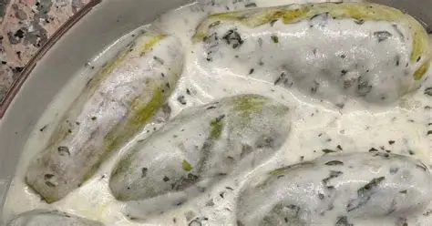
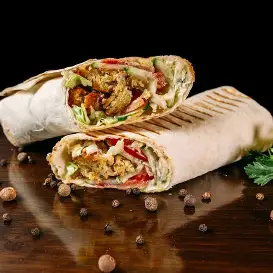
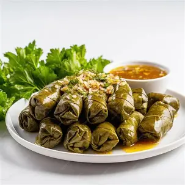

| Name | Description | Price | Image |
|---|---|---|---|
| Kibbeh | Crispy bulgur shells filled with spiced minced meat and pine nuts It is commonly served fried as stuffed torpedo-shaped croquettes or grilled .one of Syria’s most iconic dishes. | $12.99 |  |
| Kousa b laban | Kousa b Laban is a comforting and traditional Syrian dish made of tender zucchini stuffed with seasoned minced meat, gently simmered in a warm, creamy yogurt sauce enhanced with garlic, dried mint, and a touch of coriander , served with rice | $9.99 |  |
| Shawarma | A popular Levantine dish of meat cut into thin slices, stacked in a cone-like shape, and roasted on a slowly-turning vertical rotisserie or spit. | $11.99 |  |
| yalanji | Grape leaves stuffed with rice, herbs, and olive oil, served cold as a light and tangy appetizer. | $10.99 |  |